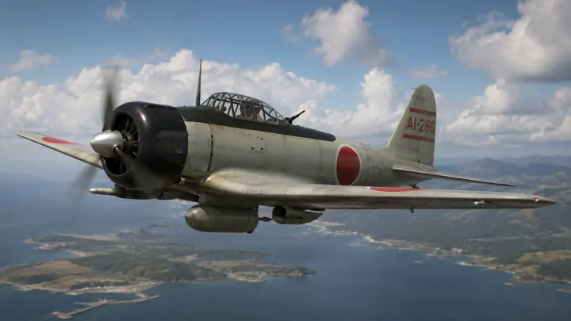

D3A operations · 1941–1945
The D3A Val was one of the most effective dive bombers of the opening phase of the Pacific War. It struck Pearl Harbor, raided the Indian Ocean, fought at Coral Sea and Midway, and continued in progressively more desperate roles through the Solomons and later defence campaigns. A good D3A build starts with the period: Pearl Harbor grey-green D3A1, carrier strike aircraft from Akagi/Kaga/Soryu/Hiryu/Shokaku/Zuikaku, dark green field-camouflaged late aircraft, or worn survivor/wreck reference route.

Role & strengths
- Imperial Japanese Navy carrier dive bomber and land-based attack aircraft
- Pearl Harbor, Indian Ocean, Coral Sea, Midway, Solomons and late-war routes
- Fixed spatted undercarriage, two-seat canopy, dive brakes and centreline bomb crutch
- IJN grey-green, dark green over grey, Hinomaru markings and carrier tail codes
- Pacific sun fading, salt wear, chipped leading edges, exhaust, oil and rough-field grime
Key theatres
- Pearl Harbor carrier strike route
- Indian Ocean raid and early carrier offensive routes
- Coral Sea and Midway carrier battles
- Solomons and late-war land-based routes
Specification D3A1
Survivor/reference today

D3A references are heavily dependent on period photos, replicas, wrecks and museum research. Use survivors/replicas for shape, but verify wartime paint and markings separately.
View referencesTimeline highlights
Build this D3A as…
Pick the period and carrier first. Pearl Harbor, Indian Ocean, Coral Sea, Midway, Solomons and late land-based aircraft have different markings, camouflage and weathering.
Aircraft identity
Carrier codes and tail markings are time-sensitive. Do not mix Pearl Harbor markings with later Solomons camouflage.
IJN grey-green, amber-grey interpretations and later dark green field finishes vary by aircraft. Build from a specific subject, not a generic “Val”.
Paint scheme cards
Early D3A1 route with Hinomaru, carrier tail codes and restrained carrier wear.
Mid/late route with fading, chipped leading edges and more intense Pacific wear.
Land-based route with dust, heat, exhaust, rough repairs and paint breakdown.
Weather spats, wing roots, cowling, bomb crutch, dive brakes and crew access separately.
Campaign cards
Early D3A1 route with carrier codes, grey-green finish and careful markings.
Carrier strike route with early-war IJN finish and operational weathering.
Akagi/Kaga/Soryu/Hiryu route with carrier-specific tail codes and battle context.
Dark green, land-based wear, sun fading, chipping and increasingly rough service.
Build difficulty and related guides
Medium-high. Canopy, spatted gear, dive brakes and markings need care.
High. Carrier code/date accuracy matters heavily for IJN subjects.
High. IJN paint wear can look excellent, but over-chipping quickly becomes cartoonish.
Aichi D3A Val carrier Kokutai and strike units
Sortable D3A cards covering Pearl Harbor carriers, Indian Ocean, Coral Sea, Midway, Solomons and survivor/reference routes.
D3A Val operating map
Airfield info
Click a marker to show linked D3A unit cards and modelling notes.
Campaign timeline
Survivors
Books and reference sources
D3A Val build guide
D3A Val videos, photos and archive material
Media replaces the old separate walkaround tab: cockpit, exhaust, undercarriage, markings, survivor references, archive imagery and video cards are grouped here.